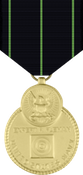
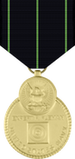
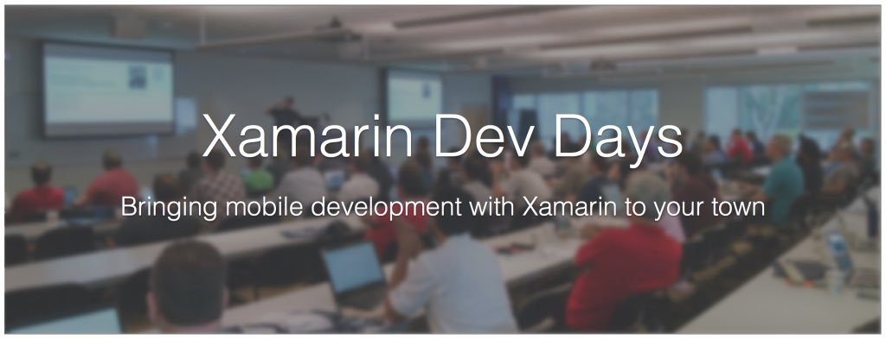
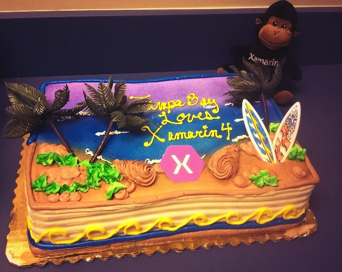
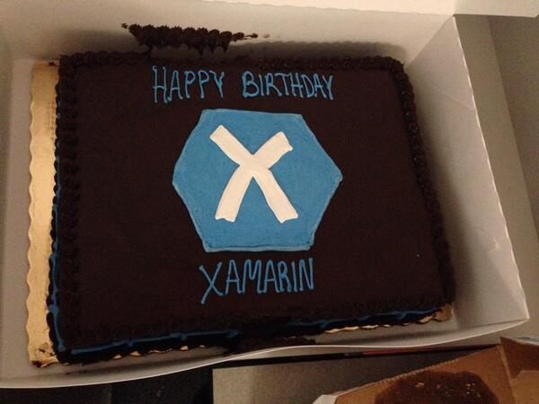
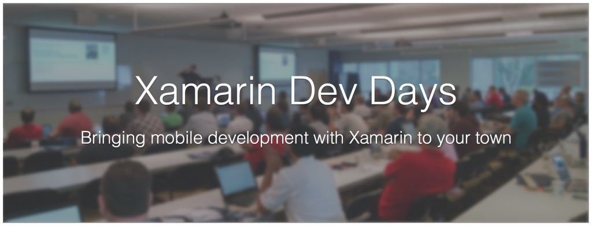
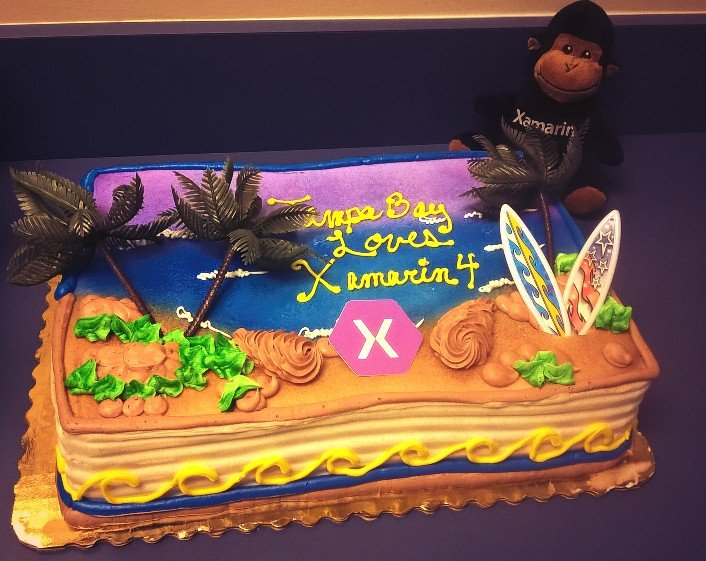
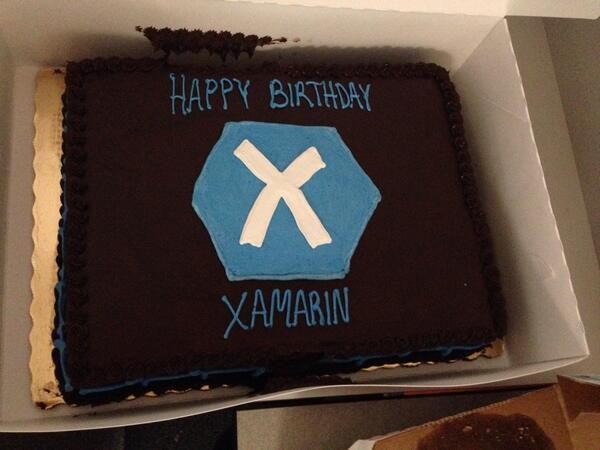

Matthew King
"Be Excellent to Each Other and ... Party on Dudes! - "Bill and Ted's Excellent Adventures
My name is Matt King and I've been involved with computers and programming since the summer of 1984. Prior to my 8th grade when I went to Cincinnati with my cousins to Computer Camp at Mount St. Joseph University. My first Program was in BASIC on an Atari Computer and on a 5 1/4 inch floppy disk.

Since then I've worked with computers primarily in the US Navy as an Operations Specialist (OS) and at the City of Tampa as an Applications Systems Analyst and Senior Programmer Analyst. In between I've worked doing several jobs as a developer/programmer at Economic Research Services (ERS Group), Akin Gump Strauss Hauer and Feld LLP and United States Automobile Association (USAA).
I majored in Computer Science, Computer Programming, Information Technology and Data Science at several schools including Xavier University (Pascal), University of Cincinnati (C++, Mathematica, Fortran, LISP, Prolog), University of Texas at San Antonio (C, Java), San Antonio College (Visual Basic, Unix scripting), Tallahassee Community College (Visual Basic, Java), Hillsborough Community College (Web Development, Perl, PHP, mySQL) and University of South Florida (C#, Java, Python, Technical Writing).
I also spend a lot of my time taking various MOOC courses via Coursera.org and EdX.org in particular the Data Science and Programming fields so I can keep my skills somewhat fresh. I attend several meetups in the Tampa Bay and Orlando areas, as well as, annual Code Camps, SQL Saturdays, IT Pro Camps, Xamarin Dev Days and Hackathons. I also try to blog about technology on my Matt King IT website I created with WordPress.
Aside from computers I really enjoy professional wrestling and going to the movies. Some of my favorite wrestlers are "Mr. Perfect" Curt Hennig, "Ravishing" Rick Rude, "The Ultimate Warrior", Kevin Owens and "Macho Man" Randy Savage. Some of my favorite movies are "Bill & Ted's Excellent Adventures", "Back to the Future", "Dogma", "What's Eating Gilbert Grape","Natural Born Killers" and "Space Balls". I mostly prefer action movies but am not to picky, I just like to have that escape every now and then.
Oh yeah, I also did a Technical Review for Ken Doman's book "Mastering ArcGIS Server Development with JavaScript". You
can get the book on Amazon.com
or Packt Publishing website.


 National Defense Service Medal (1990 - 1st)
National Defense Service Medal (1990 - 1st)
 Southwest Asia Service Medal w/ Bronze Start (1991 - 1st)
Southwest Asia Service Medal w/ Bronze Start (1991 - 1st)
 Sea Service Deployment Ribbon (1992 - 1st)
Sea Service Deployment Ribbon (1992 - 1st)
 Navy Battle "E" (1993)
Navy Battle "E" (1993)
 Navy Good Conduct Medal (1993)
Navy Good Conduct Medal (1993)
 Armed Forces Expeditionary Medal (1993)
Armed Forces Expeditionary Medal (1993)
 Kuwait Liberation Medal - Saudi (1994)
Kuwait Liberation Medal - Saudi (1994)
 Kuwait Liberation Medal - Kuwait (1994)
Kuwait Liberation Medal - Kuwait (1994)
 Navy Reserve Meritorious Service Medal (1996 - 1st)
Navy Reserve Meritorious Service Medal (1996 - 1st)

 Navy Unit Commendation (1999)
Navy Unit Commendation (1999)
 Joint Meritorious Unit Award (1999)
Joint Meritorious Unit Award (1999)
 Kosovo Campaign Medal (1999)
Kosovo Campaign Medal (1999)
 9mm Sharp Shooter Ribbon (2002 - 1st)
9mm Sharp Shooter Ribbon (2002 - 1st) Sharp Shooter Rifleman Ribbon (2006)
Sharp Shooter Rifleman Ribbon (2006) Navy and Marine Corps Achievement Medal (2007)
Navy and Marine Corps Achievement Medal (2007)
 Global War on Terrorism Expeditionary Medal (2008)
Global War on Terrorism Expeditionary Medal (2008)
 Global War on Terrorism Service Medal (2008)
Global War on Terrorism Service Medal (2008)
 Navy/Marine Corp Overseas Service Ribbon (2008)
Navy/Marine Corp Overseas Service Ribbon (2008)
 Armed Forces Reserve Medal w/ Bronze Hour Glass (2009)
Armed Forces Reserve Medal w/ Bronze Hour Glass (2009)
 Navy/Marine Corp Commendation Medal (2012)
Navy/Marine Corp Commendation Medal (2012)


 



 




